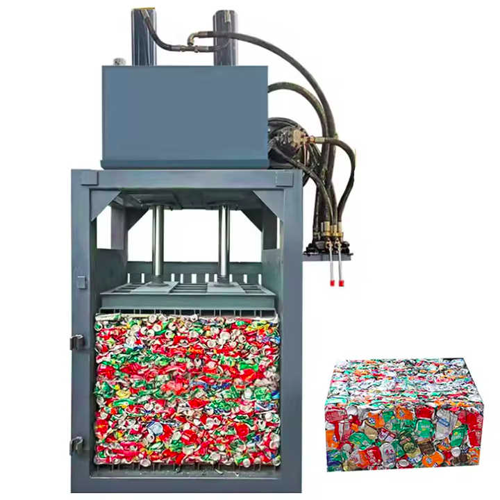
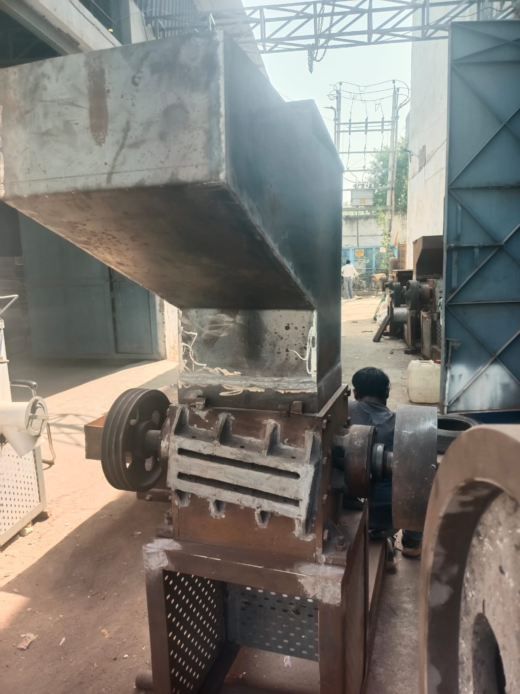
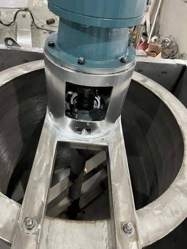
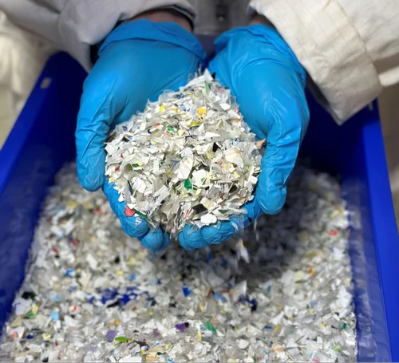
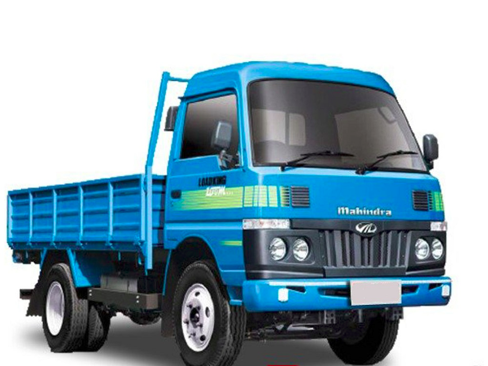

1. Press into a box
Loose bottles take too much space. The hydraulic baler squeezes them into a tight, box-shaped bale.
Budhanilkantha-11 · Chunikhel
Nikhil Suppliers buys plastic bottles in Chunikhel. We press them into compact bales, shred them into flakes, wash and dry the flakes, then pack and send them to recycling buyers.
9827377237 · WhatsApp · Email
Three machines do the main work. After that, workers finish the flakes by hand.

Loose bottles take too much space. The hydraulic baler squeezes them into a tight, box-shaped bale.

The shredder cuts bottles into very small pieces. What comes out is plastic flake, not whole bottles.

A washing machine rinses the flakes so dirt comes off before the material is sold.

This is the material after shredding and washing. Flakes are dried in the field, packed, and sent to buyers.
Washed flakes are spread in the open so they dry in the sun. Wet plastic is not packed.
Dry flakes are packed. The blue pickup takes them to buyers and also collects bottles.
